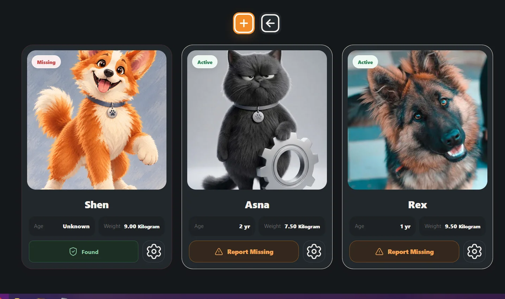
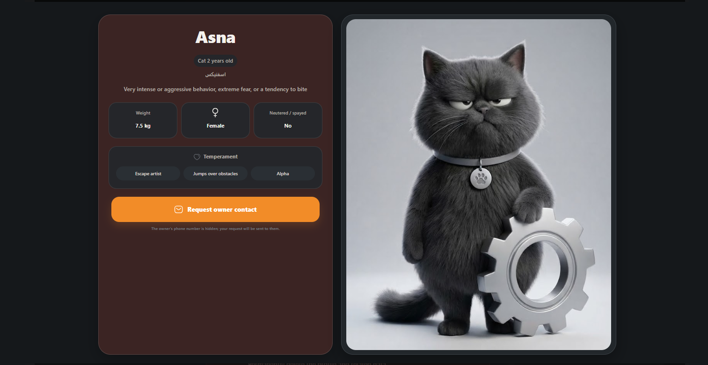
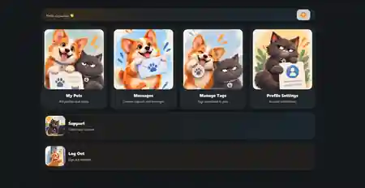
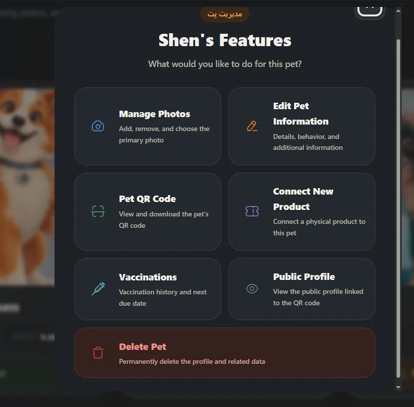
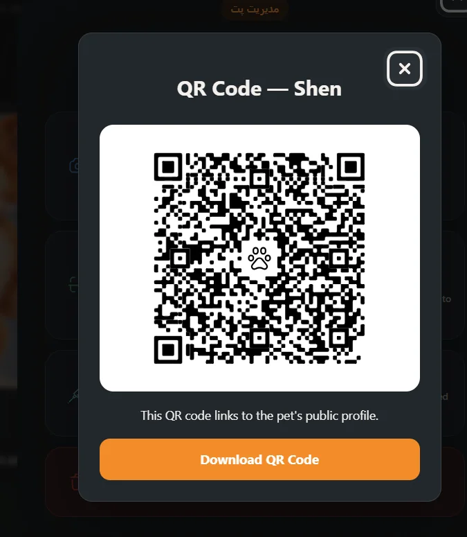
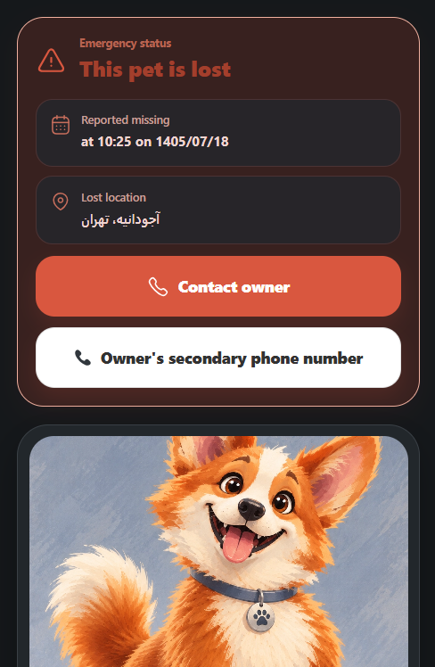

Featured project
Startup product
Shenasnapet
QR-based pet identity and profile platform
Shenasnapet is a custom WordPress-based product that connects each pet to an individual digital profile through a physical QR tag. I designed and developed the platform as a custom plugin + custom theme with its own data model, user dashboard, public profile system, subscriptions and operational workflows.
What I built
- Custom WordPress plugin architecture and custom theme
- REST API endpoints for pets, tags, profiles, scans, lost cases, sightings and contact requests
- Custom MySQL tables and repository/service layers
- Authenticated dashboard for pet, profile and tag management
- QR tag activation and pet-to-tag connection workflows
- Subscription, order and payment flows
- AJAX-based image management and profile updates
- Public/private profile logic with privacy controls
- Lost Mode with public contact visibility rules
- Security controls, access restrictions and API rate limiting
Product & UI
- Bilingual Persian / English experience
- Dark mode support
- Fully responsive, mobile-first interface across desktop, tablet and mobile
- Custom onboarding and pet registration flows
- Multi-photo pet profiles and public image carousel
- Localized date handling and custom form interactions
PHPWordPressMySQLREST API
JavaScriptAJAXCustom ThemePayments





